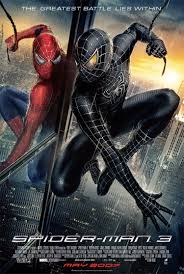
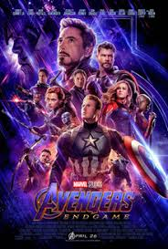
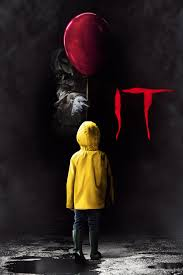

Peter Parker faces his greatest battle yet—against himself. When a mysterious alien symbiote bonds with his suit, it amplifies his powers but brings out his darkest traits. Packed with intense action and sci-fi elements, Spider-Man must fight iconic villains like Sandman and Venom while trying to save the city and his relationships.

The epic conclusion to the Marvel cinematic universe's biggest saga. After Thanos wipes out half of all life, the remaining Avengers must reunite for one final, desperate mission to reverse the damage. It is an unforgettable ride filled with massive superhero team-ups, spectacular fights, and non-stop action.

A chilling horror movie that perfectly balances terrifying jump scares with surprisingly funny and heartfelt moments. When a shape-shifting evil entity disguised as Pennywise the clown begins hunting children in the small town of Derry, a group of misfit kids must band together to face their deepest fears and survive.
